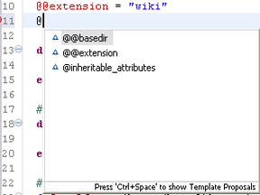
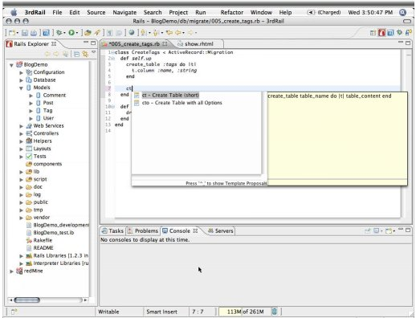

3rdRail leverages its understanding of Ruby constructs and Rails conventions to help you code faster. It provides Content Assist to insert or finish a tag or function, or finish a line of code. These pre-defined code snippets are called templates. Content Assist options are available in the 3rdRail editors and consoles, and of course the Commanders.
For a video overview of code completion in 3rdRail, see Using Code Completion.
3rdRail keeps track of what commands, parameters, and options should be available at any time and dynamically lists them as you code. The placement of the cursor in the editor triggers context specific completion options in a pop-up:

Templates that make sense in the context of what you are coding are called Template Proposals. You can pick from the available proposals to complete the code. Press CRTL + SPACE to invoke available Template Proposals from the default pop-up:

Manually invoke from the workbench:
Edit
Select from the following options:
|
Note: |
Rails specific Content Assist is not available in the . |
Configure Content Assist features in the Editor or Console preference page. Access preference pages from the workbench:
Window
 CodeGear brand
and product names are service marks, trademarks or registered trademarks of Borland Software
Corporation in the United States and other countries.
CodeGear brand
and product names are service marks, trademarks or registered trademarks of Borland Software
Corporation in the United States and other countries.